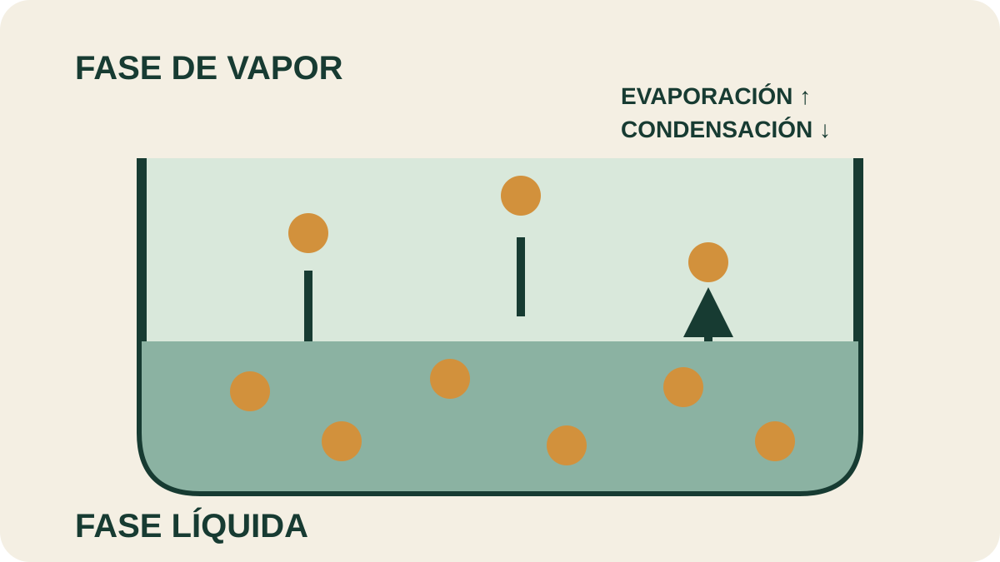

Módulo 14 · 25 minutos
La física que hace posible el alambique
Al terminar, vas a poder explicar con conceptos físicos qué ocurre dentro de un alambique.
Hervir sin quemar
Algunos compuestos aromáticos tienen puntos de ebullición muy superiores a 100 °C. Si hubiera que llevarlos solos hasta esa temperatura, podrían deteriorarse. Sin embargo, dentro del alambique viajan con el vapor de agua a una temperatura menor. No es magia: es el resultado de la presión, las fases y el movimiento de las moléculas.
Cuando un líquido empieza a hervir
El marca el momento en que puede formarse vapor en cualquier parte del líquido. Por debajo de ese punto, algunas moléculas de la superficie también escapan: poseen energía suficiente para vencer la tensión superficial. La temperatura expresa la energía cinética media de esas moléculas.
El punto de ebullición depende de la masa molecular y de las fuerzas intermoleculares, pero también de la presión exterior. Si la presión disminuye, un líquido puede hervir a menor temperatura. Esta relación será la clave de la destilación al vacío.
Un techo hecho de moléculas
En un recipiente cerrado, algunas moléculas abandonan el líquido y otras regresan. Cuando ambos movimientos se equilibran aparece la . Mientras convivan líquido y vapor, su valor no depende de cuánto haya de cada fase, sino de la sustancia y la temperatura.
El paso de líquido a gas es evaporación; el regreso de gas a líquido es . La destilación enlaza exactamente esos dos movimientos: primero libera vapor y luego lo enfría para recuperar líquido.
Juntos, pero en dos capas
Dos líquidos son cuando forman una solución uniforme, como agua y etanol. Son inmiscibles cuando permanecen en fases separadas. El agua y el aceite esencial recogidos al final del proceso forman dos capas porque no se mezclan en una fase homogénea.
La ayuda a precisar la diferencia. La sustancia que se disuelve es el soluto; el medio que la recibe es el solvente. El carácter polar o apolar influye en qué combinaciones son posibles. La conecta así la estructura molecular con lo que vemos en el recipiente.
Extraer es transferir
La extracción ocurre cuando uno o más componentes pasan de una fase a otra. En la extracción sólido-líquido, un constituyente de un sólido se transfiere a un disolvente. Percolación, lavado y agotamiento son distintas operaciones dentro de esa familia.
Otra propiedad, la , muestra hasta qué punto importan las fuerzas entre moléculas. El líquido asciende hasta que la tensión superficial se equilibra con el peso de la columna. Más adelante, la misma idea ayudará a comprender la cromatografía.

Seguí dos movimientos opuestos
Localizá una molécula que abandona el líquido y otra que vuelve. ¿Qué mantiene el equilibrio? Imaginá ahora que la temperatura aumenta: explicá qué flecha esperarías que se vuelva más frecuente.
Actividad · Explicar las dos capas
Explicá por qué, tras una destilación, el aceite esencial queda separado del agua. Usá exactamente tres términos entre estos: miscibilidad, fase, polaridad, soluto, solvente y densidad. Después agregá una frase que distinga evaporación de ebullición.
Ya se puede mirar la materia con otra precisión
El alambique dejó de ser una caja misteriosa. Pero para elegir una operación todavía falta preguntar qué clase de mezcla tenemos y qué propiedad permite separar sus componentes.
Guardá esta estación
Cuando puedas explicar la idea central con tus propias palabras, marcá el módulo como completado.